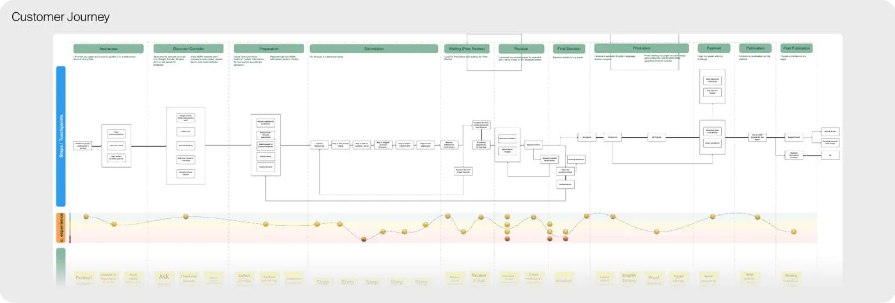
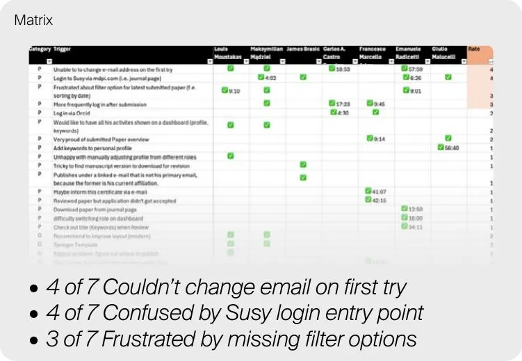
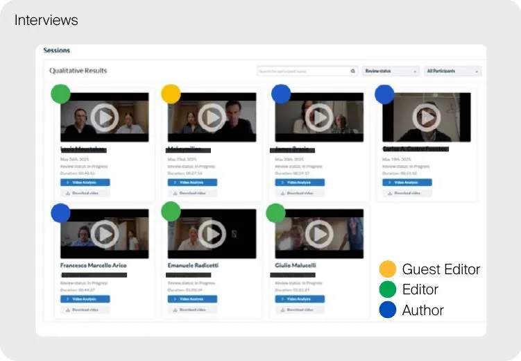
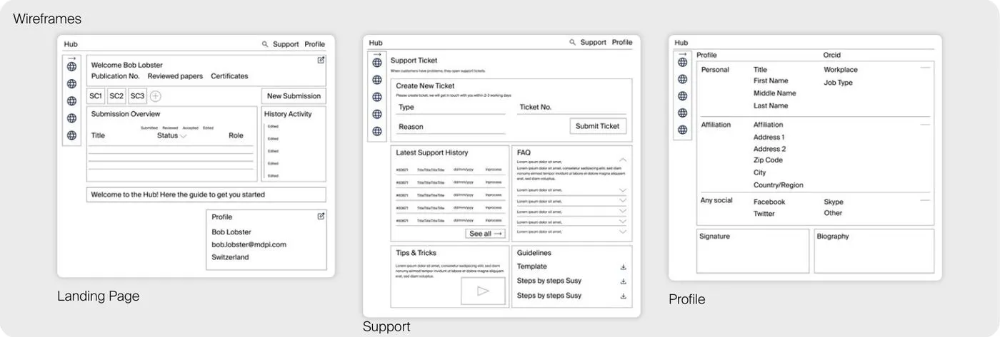

Context
MDPI wanted to bring its user accounts into one dashboard. We started with Susy, its submission system.
Susy generates the most revenue at MDPI, and every user has an account for it, whichever other MDPI product they use.
Problem
Satisfaction looked healthy. Behaviour didn’t.
The two signals didn’t agree, and no one owned the full picture across Editorial, Support and Product.
Research
I defined the core questions first: who our users are, what they’re trying to do, what brings them to Susy, and whether they use their account beyond a single submission. With Editorial, who work in the platform daily, and Support, who handle complaints by email, I mapped a customer journey for two personas, an early-career and an experienced researcher, from awareness to post-publication.

To test the journey against real behaviour, I ran moderated interviews with 7 external researchers: Authors, Reviewers, Guest Editors and Editors. I refined the questions over three rounds, starting internally with the Editorial team in Basel, then ranked recurring pain points in a matrix by how many participants raised them.


I log in and land on my profile. From there, I want to check on my manuscript status… but after clicking through a few times, I either get stuck or don’t know what to do next, so I leave.Persona quote, user interview
Key findings
- Goal-drivenUsers are highly goal-oriented and efficiency-driven
- DisorientationInconsistent terminology and dated visuals confuse people
- RepetitionRepetitive, manual form fields lower satisfaction
- First impressionFriction at login and in navigation damages trust early
- One placeUsers want one role-aware dashboard, not scattered tools
- Unused extrasCover letters and video abstracts are largely ignored or misunderstood
Design direction
I translated each finding into low-fidelity wireframes for a unified User Hub. Every area answers a specific friction point from the research.
- A central dashboard for submissions, activity history and publication stats
- A streamlined profile and account section
- Self-service support with ticketing and FAQs
- A personalised newsletter and interests section

Outcome
For the first time, MDPI had a validated answer for why satisfaction scores and behaviour told two different stories.
The research reframed User Hub from a UI refresh into an evidence-based redesign. My part ended after research and the first wireframes. The hypothesis and direction I defined are what the next phase builds on.
Reflection
If I did it again, I’d run a quick usability test on the wireframes before handing over, so the next team would inherit tested screens and not only a direction.